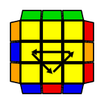

3x3x3 큐브를 맞추기에 앞서 큐브 한 면만 맞추는 연습을 해보시는 걸 권장합니다.
그렇게 하시면 어느 정도 감이 잡히게 돼서 큐브 맞추기 8단계 중 1~3 단계를 건너뛰실 수도 있습니다.


위에 나와있는 공식도 좋지만 더 괜찮은 공식을 알려드리자면
오른쪽에 들어가는 경우(U R U' R' y U' L' U L)
왼쪽에 들어가는 경우(U' L' U L y' U R U' R')
y와 y'은?
기존에 보던 것들과는 다르게 전체 방향을 바꿔주는 기호입니다.

윗면의 모양에 유의해서 잘 맞춰보시길 바랍니다.

이것도 마찬가지로 윗면의 모양에 유의해 주세요.

이 단계에서는 ㅂ모양으로 되는 부분이 나오거나 안나오거나 인데
나왔을 경우엔 ㅂ모양을 왼쪽에 두고 Jb펌(R U R' F' R U R' U' R' F R2 U' R') 공식을 적용해주시면 됩니다.
위에 사진에 있는 공식도 Jb펌 공식이긴 합니다만, 좀 더 괜찮다고 생각하는 공식을 알려드렸습니다.
안나왔을 경우엔 Y펌(F R U' R' U' R U R' F' R U R' U' R' F R F') 공식을 적용해주시면 됩니다.
▲Jb펌과 Y펌
무슨 말인지 모르겠다 하시면 위 사진에 있는 공식을 따르는 것도 나쁘지 않은 선택일 것 같습니다.

드디어 마지막 단계입니다.
사진에 나와있는 공식도 좋지만, 더 괜찮은 공식을 알려드리자면
Ua펌 공식-> M2 U M U2 M' U M2Ub펌 공식 -> M2 U' M U2 M' U' M2
위 사진에 나와있는 공식들도 각각 위에서부터 Ub, Ua펌 입니다.
다 맞추셨나요?
시간도 오래 걸리고 많이 어렸다고 느끼셨을 수도 있을 텐데요.
오래 걸리신 만큼 나중에 잘하게 되실 거니깐
못 맞췄다고 해도 포기하지 않고 큐브 맞추기가 즐거운 취미가 됐으면 합니다.
수고하셨습니다!